ggplot(data = mpg,
mapping = aes(x = displ, y = hwy,
color = drv)) +
geom_point(alpha = .4) +
geom_smooth(se = FALSE)DANL 200: Classwork 3 - Data Visualization
Question 1. Geometric Objects
Q1a.
Run this code in your head and predict what the output will look like. Then, run the code in R and check your predictions.
Q1b.
What does show.legend = FALSE do? What happens if you remove it? Why do you think I used it earlier in the lecture?
Answer: show.legend = FALSE turns off the legend in ggplot.
ggplot(data = mpg) +
geom_point(mapping = aes(x = displ, y = hwy,
color = drv),
alpha = .5,
show.legend = FALSE)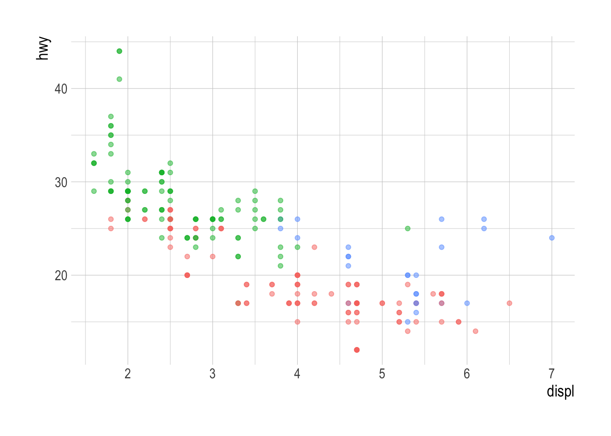
The default is show.legend = TRUE:
ggplot(data = mpg) +
geom_point(mapping = aes(x = displ, y = hwy,
color = drv),
alpha = .5,
show.legend = TRUE)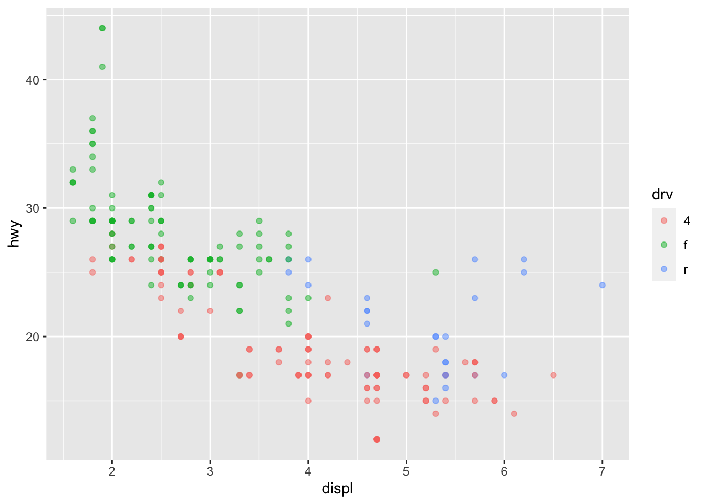
Sometimes, we do not need to have a separate legend in ggplot, for example, geom_boxplot() with fill mapping.
Q1c.
Recreate the R code necessary to generate the following graphs.
(a)
Code
ggplot(mpg, aes(x = displ, y = hwy)) +
geom_point(alpha = .4) +
geom_smooth(se = FALSE)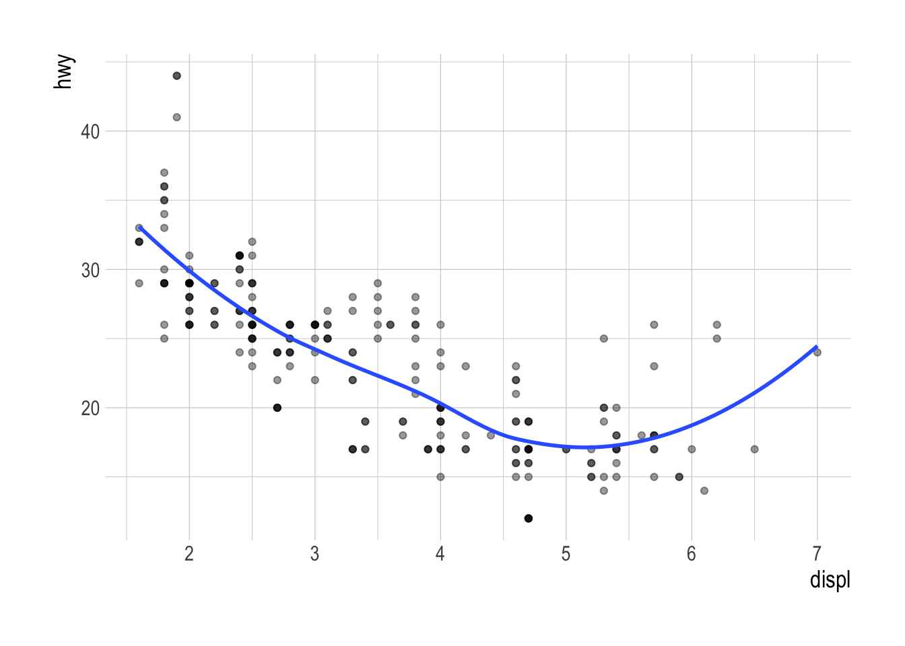
(b)
Code
ggplot(mpg, aes(x = displ, y = hwy)) +
geom_smooth(mapping = aes(group = drv),
se = FALSE) +
geom_point(alpha = .4)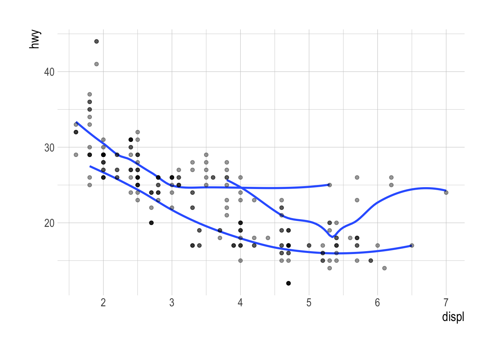
(c)
Code
ggplot(mpg, aes(x = displ, y = hwy,
color = drv)) +
geom_point(alpha = .4) +
geom_smooth(se = FALSE)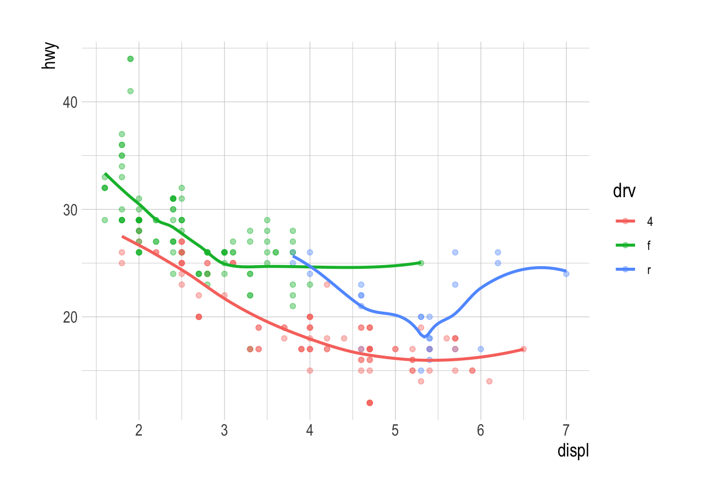
(d)
Code
ggplot(mpg, aes(x = displ, y = hwy)) +
geom_point(aes(color = drv), alpha = .4) +
geom_smooth(se = FALSE)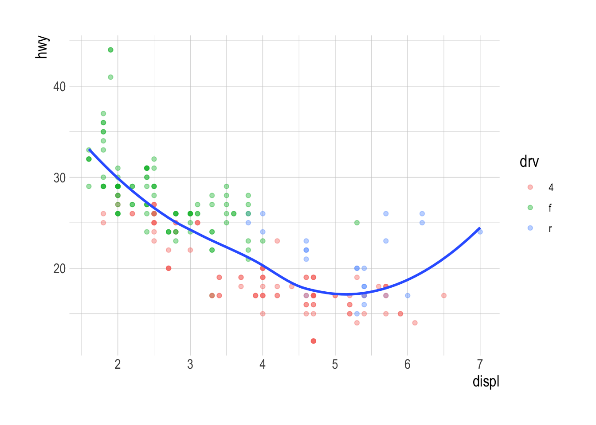
(e)
Code
ggplot(mpg, aes(x = displ, y = hwy)) +
geom_point(aes(color = drv), alpha = .4) +
geom_smooth(aes(linetype = drv), se = FALSE)
(f)
Code
ggplot(mpg,
aes(x = displ, y = hwy)) +
geom_point(size = 4, color = "white") +
geom_point(aes(color = drv), alpha = .4) +
theme_gray()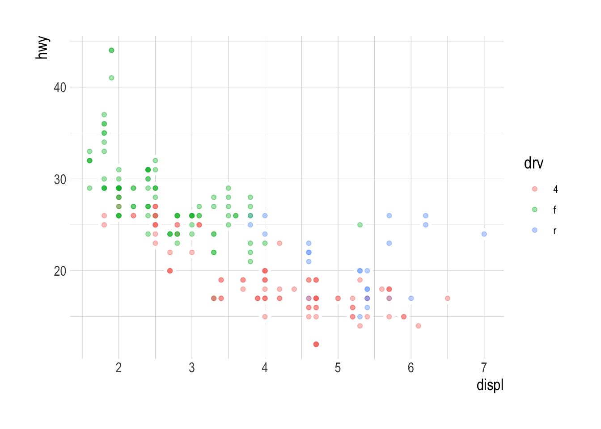
Q1d.
- Use the data.frame,
organdata_simpleto visualize the yearly trend of the variabledonorsfor each country.
organdata_simple <- read_csv('https://bcdanl.github.io/data/organdata_simple.csv')Question 2. Statistical Transformation and Position Adjustment
Q2a.
What does geom_col() do? How is it different to geom_bar()?
Answer:
Let’s consider the bar chart for the distribution of manufacturer in the mpg data.frame.
ggplot(mpg) +
geom_bar(aes(y = manufacturer))To compare between geom_bar() and geom_col(), create the data.frame, q2a that is the data.frame of table(mpg$manufacturer):
# we can use as.data.frame()
# to convert to data.frame from table or vectors
q2a <- as.data.frame(
table(mpg$manufacturer)
)q2a has the two variables, Var1 and Freq.
q2a Var1 Freq
1 audi 18
2 chevrolet 19
3 dodge 37
4 ford 25
5 honda 9
6 hyundai 14
7 jeep 8
8 land rover 4
9 lincoln 3
10 mercury 4
11 nissan 13
12 pontiac 5
13 subaru 14
14 toyota 34
15 volkswagen 27geom_bar(aes(y = ... , x = ... )) causes error:
geom_bar(aes(y = Var1, x = Freq), stat = "identity") will directly use the values of Freq to visualize a bar height for each category of Var1:
ggplot(q2a) +
geom_bar(aes(y = Var1, x = Freq),
stat = "identity")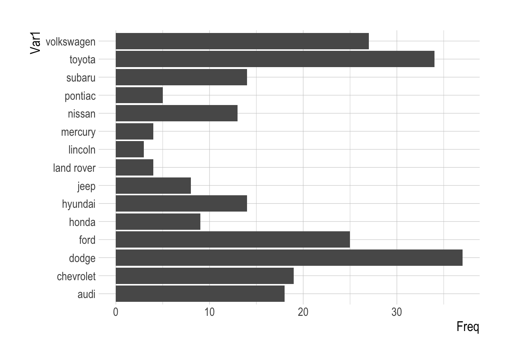
We can do the same with geom_col(aes(y = Var1, x = Freq)):
ggplot(q2a) +
geom_col(aes(y = Var1, x = Freq))Q2b.
- Install the R package,
nycflights13, which provides theflightsdata.frame.
Answer:
install.packages("nycflights13")nycflights13::flightsincludes on-time data for all flights that departed NYC (i.e. JFK, LGA or EWR) in 2013.- A unit of observation is flight.
library(nycflights13)
head(flights)# A tibble: 6 × 19
year month day dep_time sched_dep_time dep_delay arr_time sched_arr_time
<int> <int> <int> <int> <int> <dbl> <int> <int>
1 2013 1 1 517 515 2 830 819
2 2013 1 1 533 529 4 850 830
3 2013 1 1 542 540 2 923 850
4 2013 1 1 544 545 -1 1004 1022
5 2013 1 1 554 600 -6 812 837
6 2013 1 1 554 558 -4 740 728
# ℹ 11 more variables: arr_delay <dbl>, carrier <chr>, flight <int>,
# tailnum <chr>, origin <chr>, dest <chr>, air_time <dbl>, distance <dbl>,
# hour <dbl>, minute <dbl>, time_hour <dttm>- Visualize the distribution of
carrier.
Answer:
- Bar chart
library(nycflights13)
ggplot(flights) +
geom_bar(aes(y = carrier))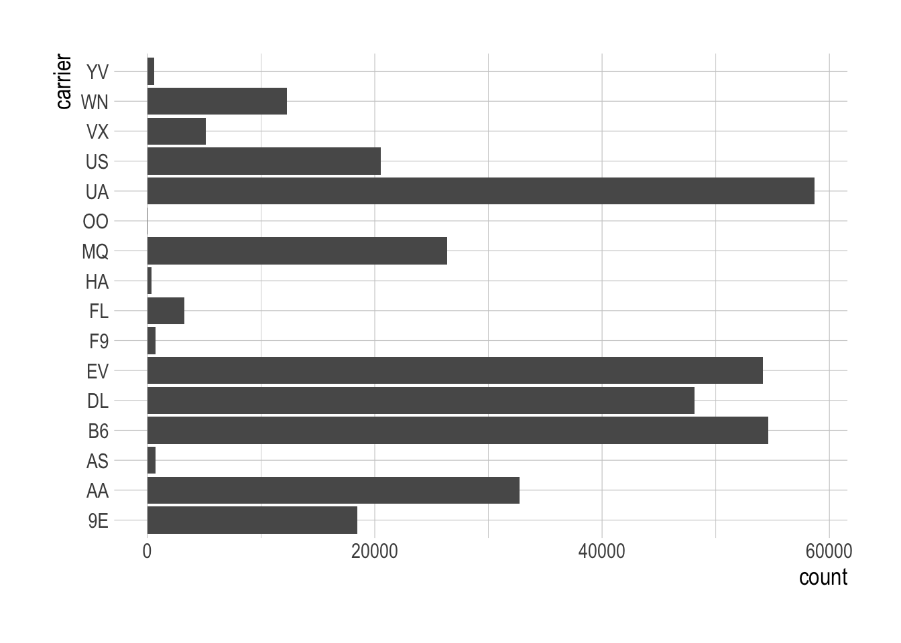
- Proportional bar chart
ggplot(flights) +
geom_bar(aes(y = carrier,
x = stat(prop), group = 1))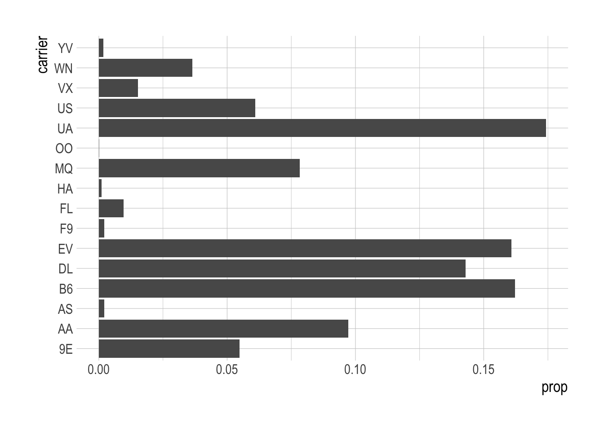
- Visualize how the distribution of
carriervaries byorigin.
Answer:
- Facet
ggplot(flights) +
geom_bar(aes(y = carrier)) +
facet_wrap( . ~ origin)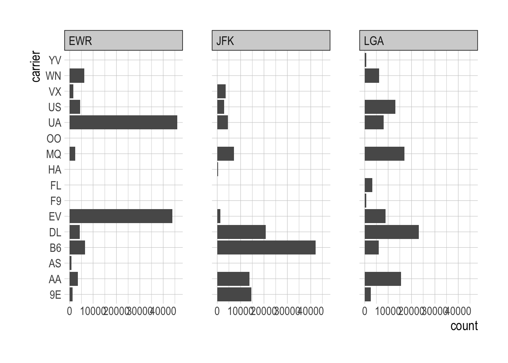
- Stacked bar chart
ggplot(flights) +
geom_bar(aes(y = carrier, fill = origin)) 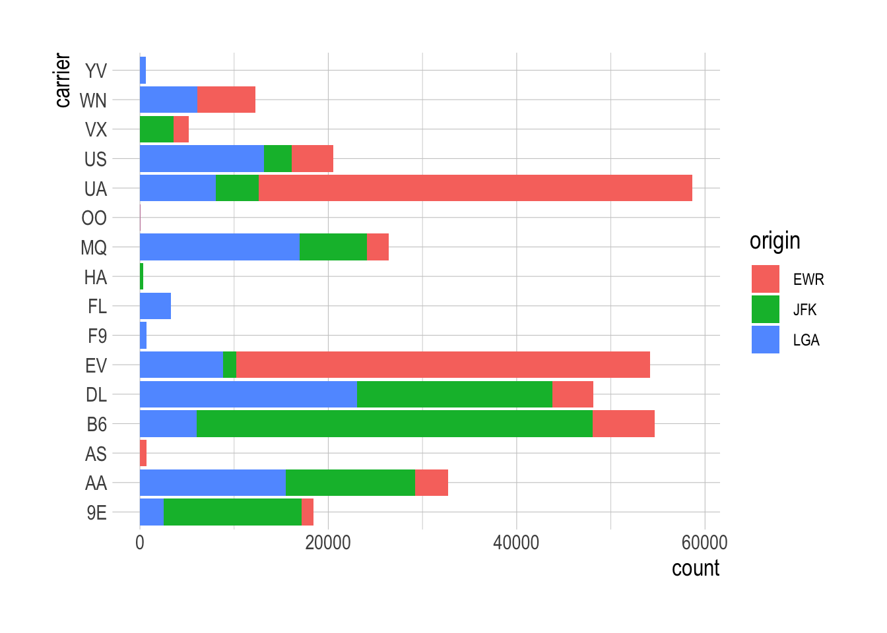
- Stacked proportional bar chart
ggplot(flights) +
geom_bar(aes(y = carrier, fill = origin),
position = "fill") 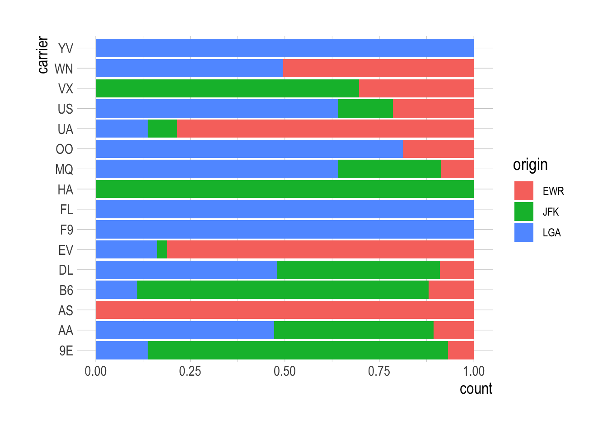
- Side-by-side bar chart
ggplot(flights) +
geom_bar(aes(y = carrier, fill = origin),
position = "dodge") 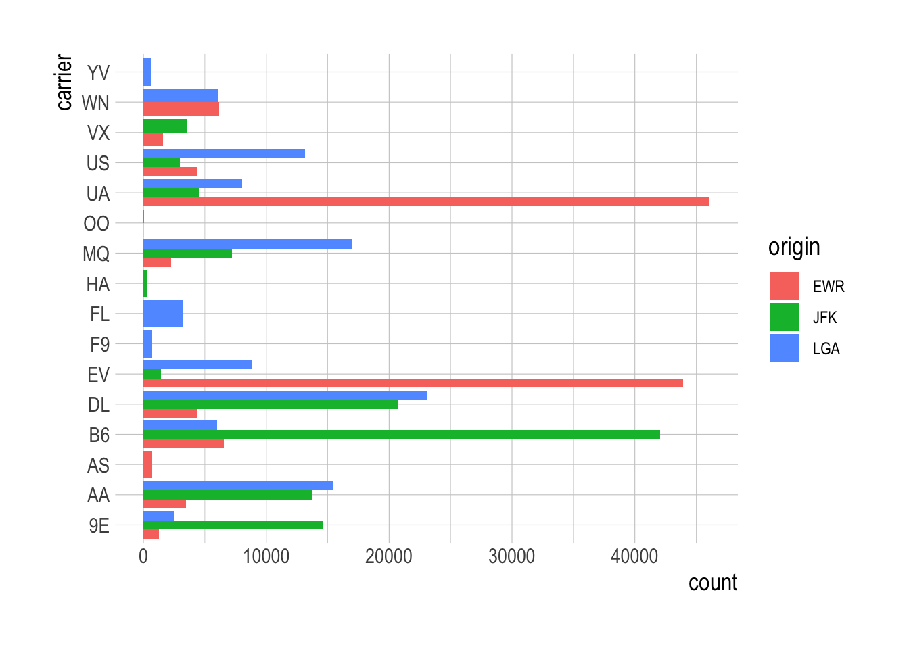
ggplot(flights) +
geom_bar(aes(y = origin, fill = carrier),
position = "dodge") 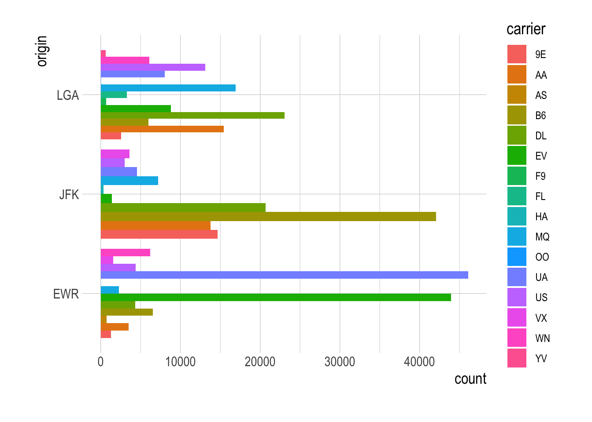